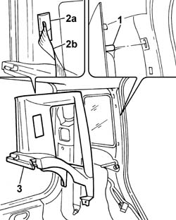

7040H66 LEFT REAR SIDE TRIM, WITH REAR PARCEL SHELF SUPPORT - R.R .
- Path
- Procedures > 70 FITTINGS > 7040 BODYSHELL INTERIOR TRIMS AND FITTINGS > 7040H roof panel lining > 7040H66 LEFT REAR SIDE TRIM, WITH REAR PARCEL SHELF SUPPORT - R.R .
- Kind
- repair procedure (removal / refitting; the operation number is the code)
- Applies to
- all engines; all production periods
- Interactive page
- https://sloeber94.github.io/elrnDB-fPnd/en/#/2753211
Applies to: all engines; all production periods
 Removing
Removing
 Refitting
Refitting7040B10 load platform (luggage platform) trim - r+r
7050A20 one-piece rear seat cushion - r r
Release the rear door and tailgate housing seals as much as necessary in order to be able to release the rear side trim.
1. Release the rear side trim from the fastening pins using the special tool.
 | Name | Country |
|---|---|---|
- | Scraper blade | 1.878.077.000 |
2. Release the trim (2a) and release the seat belt (2b).
3. Remove the rear side trim.
Release the trim from the seat belt.

Applies to: all engines; all production periods
Refitting
RemovingPlace the trim on the seat belt.
Fit the seat belt inside the housing in the side trim and secure the trim.
Place the side trim in position and check that it is securely fitted.
Check that the seat belt slides correctly inside the trim.
Fit the rear door and tailgate housing seals.
7050A20 one-piece rear seat cushion - r r
Topics linked from this page (4)
- 7040B10 load platform (luggage platform) trim - r+r
- 7040H50 rear panel - r r
- 7040H80 parcel rack
- 7050A20 one-piece rear seat cushion - r r
Topics that link to this page (13)
- 5505A90 rear wiring bundle - r r or replace
- 5570T20 radio aerial amplifier - r r
- 5580C50 (HEAD- BAG MODULE ) (one), left or right - R.R.
- 7015A24 tailgate hinges - repair or replace with tailgate removed
- 7030B24 sliding roof blind,front or rear - r r
- 7030B47 GUIDE device for sliding roof movement control cables - R.R .
- 7030B50 sun roof guide , one , lh or rh - r r
- 7030B70 sun-roof control switch - r+r
- 7030B74 sun-roof wiring harness - r r or replace
- 7040B06 side trim (one) lh or rh, load compartment/load platform - r r
- 7040H10 roof panel lining - r r
- 7040H16 roof panel lining - r r
- 7040H67 RIGHT REAR SIDE TRIM, WITH REAR PARCEL SHELF SUPPORT - R.R .